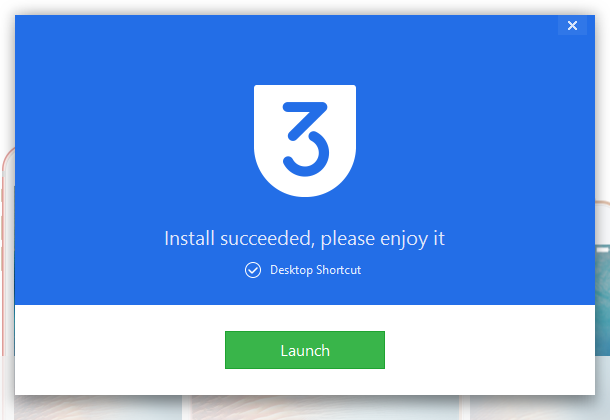

3utools ໂປຣແກຣມຟຣີສຳລັບຄົນໃຊ້ໄອໂຟນ
ມື້ນີ້ຈະມາແນະນຳໂປຣແກຣມອຳນວຍຄວາມສະດວກສຳລັບຄົນທີ່ໃຊ້ໄອໂຟນ. ໂດຍໂປຣແກຣມທີ່ຈະມາແນະນຳນີ້ສາມາດດາວໂຫລດເພງ ຮູບ ແອບພິເຄຊັ່ນ ຕ່າງໆຈາກຄອມຂອງທ່ານໃສ່ iDevice ຂອງທ່ານບໍວ່າຈະເປັນ iphone ipad ipod.
ເປັນຫຍັງຕ້ອງໃຊ້ໂປຣແກຣມນີ້?
- ການໃຊ້ງານສະດວກສະບາຍພຽງເຊື່ອມຕໍ່ສາຍສົງຂໍ້ມູນກັນເຄືອງຄອມເປີດໂປຣແກຣມ ພຽງເທົ່ານີ້ໂປຣແກຣມກໍພ້ອມໃຊ້ງານ.
- ສາມາດຍ້າຍຮູບຂອງທ່ານມາໄວ້ໃນຄອມພິວເຕີ້ເພື່ອເພີມເນື້ອໃນວ່າງໃນໂທລະສັບ
- ສາມາດ copy ເພງລົງໃສ່ໂທລະສັບເພື່ອຟັງອອຟລາຍເມື່ອໃດກໍໄດ້
- ບໍ່ມີບັນຫາເລື່ອງ application ທີ່ມີຂະໜາດໃຫຍ່ກວ່າ 100MB ແລ້ວໃຫ້ຕໍໄວໄຟເພາະເຮົາສາມາດໂຫລດມາລົງຄອມແລ້ວຕິດຕັັ້ງໃສ່ໂທລະສັບໄດ້ຢ່າງງ່າຍດາຍ
ສະຫຼຸບກໍຄືໂປຣແກຣມມັນໃຊ້ງານງາຍແລະຟຣີ ຖ້າໄດ້ໃຊ້ແລ້ວການໃຊ້ອຸປະກອນ iDevice ຂອງທ່ານຈະສະດວກຂຶ້ນຫຼາຍ ແອັດມິນເອງແຕ່ກີ້ໃຊ້ໂປຣແກຣມ iTunes ສຳລັບດາວໂຫລດ Application ແຕ່ວ່າຮູ້ສືກວ່າໂຫລດຊ້າຫຼາຍແລະ ບໍ່ສະດວກໃນການໃຊ້ງານ. ລ່າສຸດມີການອັບເດດລະບົບຂອງ Apple ແມ່ນເຮັດໃຫ້ບໍສາມາດດາວໂຫລດ App ຜ່ານ iTunes ໄດ້ ແອັດມິນກໍໄດ້ປ່ຽນມາໃຊ້ 3utools ຮູ້ສືກວ່າຄັກຫຼາຍກໍເລີຍມາແນະນຳໃຫ້ຕິດຕັ້ງ ກ່ອນການຕິດຕັ້ງແມ່ນຕ້ອງໄດ້ຕິດຕັ້ງໂປຣແກຣມ iTunes ກ່ອນເພາະໂປຣແກຣມຈະໄດ້ນຳໃຊ້ driver ທີ່ຕິດມາກັບ iTunes ເຊິງສາມາດເຂົ້າໄປໂຫລດໄດ້ຕາມລິ້ງນີ້ເລີຍ
ຂັ້ນຕອນການຕິດຕັ້ງ
1 ໄປທີ www.3u.com ແລ້ວຄລິກ Download ດັ່ງຮູບ
2 ເມື່ອດາວໂຫລດສຳເລັດແລ້ວເປີດໄຟລຂຶ້ນມາ ແລ້ວກົດ install ເພື່ອເລີມຂັ້ນຕອນການຕິດຕັ້ງ
3 ລໍຖ້າໂປຣແກຣມຕິດຕັ້ງ
4 ເມື່ອໂປຣແກຣມຕິດຕັ້ງສຳເລັດຈະກາປົດໜ້າຕ່າງດັ່ງນີ້ກົດ Launch ເພື່ອເລີມຕົ້ນໂປຣແກຣມ

ຈາກນັ້ນຈະປາກົດໜ້າຕ່າງໂປຣແກຣມພຽງເທົ່ານີ້ກໍຖືວ່າສຳເລັດການຕິດຕັ້ງ
ບົດຄວາມຕໍ່ໄປແອັດມິນຈະມາບອກວິທີການໃຊ້ໂປຣແກຣມຈື່ມອີກສຳລັບມື້ນີ້ແອັດມິນຂໍຈົບບົດຄວາມແຕ່ພຽງເທົ່ານີ້ ໃຜທີ່ຖືກໃຈກົດ like ກົດ Share ເພື່ອເປັນກຳລັງໃຈໃຫ້ແອັດມິນແນ່ເດີສຳລັບ